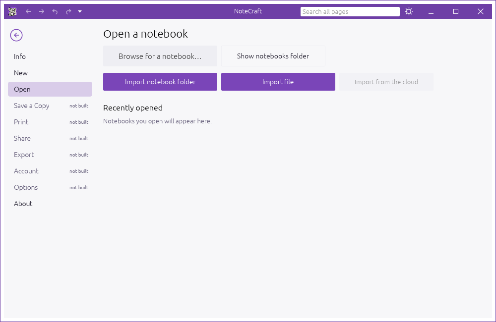
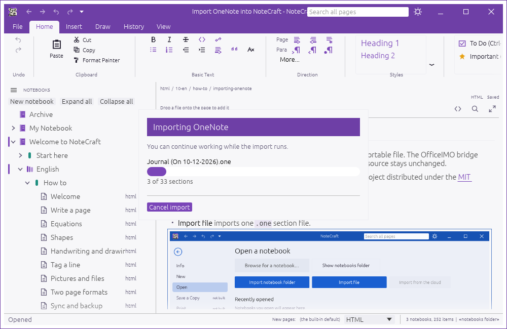

NoteCraft can import a complete notebook folder or one importable file. The OfficeIMO bridge converts the source into NoteCraft's plain folder format. The source stays unchanged.
OneNote parsing is provided by OfficeIMO, an open-source project distributed under the MIT license.
On File > Open, use the two import actions:
.one section file.
Choose Import notebook folder and select a folder such as 2026. The folder name becomes the notebook name. Nested folders become section groups, and .one files become sections. Pages and nested pages keep their names and hierarchy.
Choose Import file and select one .one file. NoteCraft creates a notebook named after the file and places the imported section inside it.
NoteCraft creates the destination inside the configured notebooks folder, opens the imported notebook after a successful import, and adds it to Recently opened. The original OneNote files are never changed. A progress dialog shows the current section and lets you cancel safely.
If a notebook with the same name already exists, NoteCraft avoids overwriting it by adding a Windows-style suffix: 2026, 2026 (1), 2026 (2), and so on.
Folder imports recurse through nested folders. Folders become section groups, .one files become sections, and pages and nested pages keep their names and hierarchy.
While an import is running, NoteCraft shows one themed progress dialog with the current section, progress count, and a Cancel import button.

Encrypted or unsupported sections are reported in the imported notebook's import-errors.txt. Readable sections still open when a folder contains a mixture of readable and unsupported files.